Skip to content
Électroniques
Maison
Beauté
Santé
Cuisine
Outils
Sports
Jouets
Bébés
Mode
Extérieur
Animaux
Jeux Vidéos
Livres
Rechercher :
Électroniques
Maison
Beauté
Santé
Cuisine
Outils
Sports
Jouets
Bébés
Mode
Extérieur
Animaux
Jeux Vidéos
Livres
Rechercher :
Rechercher :
Accueil
>
Cuisine
Cuisine
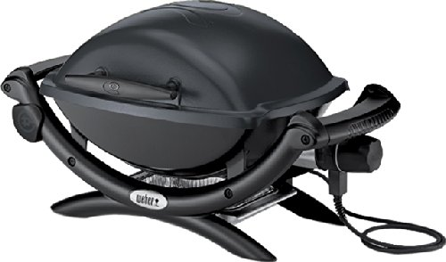
Weber Q1400 – Test et avis
Proficook 1074 – Test et avis
Moulinex Masterchef 8000 – Test et avis
Kuvings C9500 – Test et avis
Extracteur de Jus Koenig Gsx18 – Test et avis
Extracteur de Jus Simeo PJ555 – Test et avis
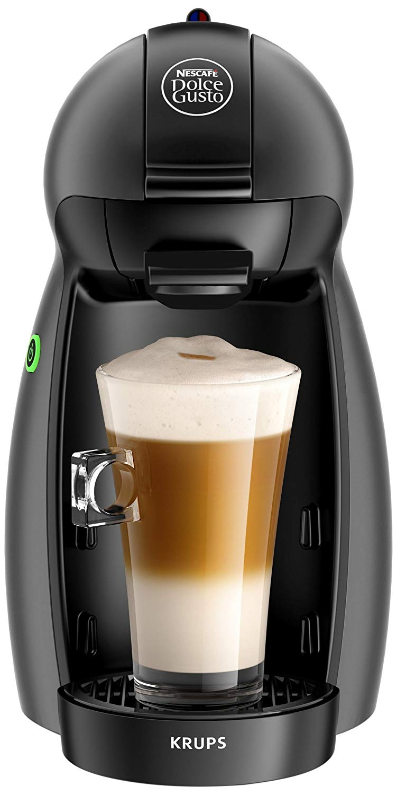
Dolce Gusto Piccolo – Test et avis
Robot Fagor Grand Chef – Test et avis
Rhum Diplomatico – Test et avis
Russell Hobbs – Test et avis
Nespresso Inissia – Test et avis
Stoneline – Test et avis
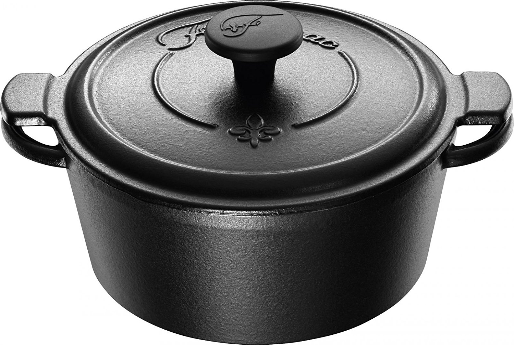
Fontignac – Test et avis
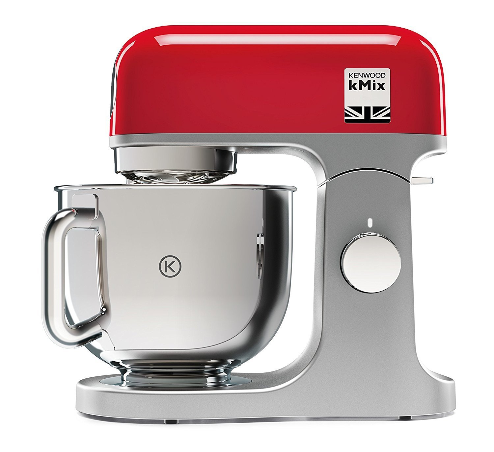
Kenwood Kmix – Test et avis
Jago24 – Test et avis
Actifry – Test et avis
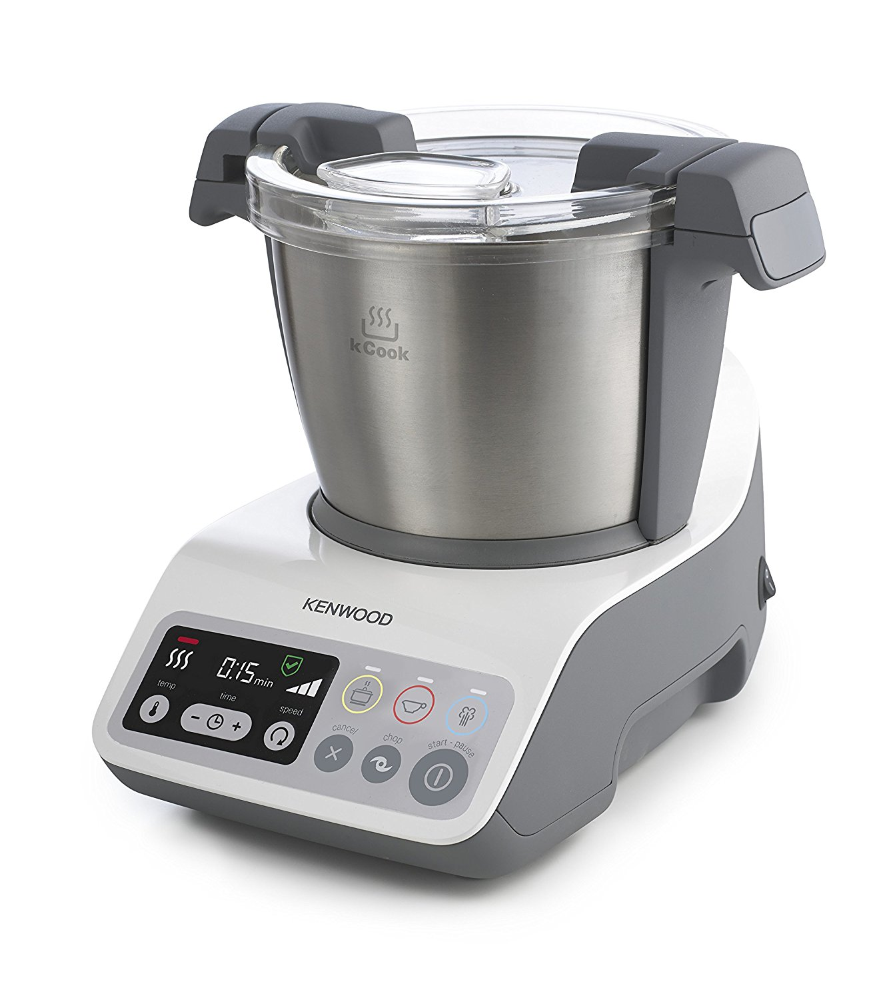
Kenwood Kcook – Test et avis
Nespresso Vertuo – Test et avis
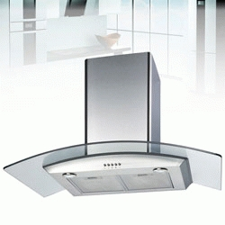
Comparatif des meilleures Hottes Aspirante Silencieuse
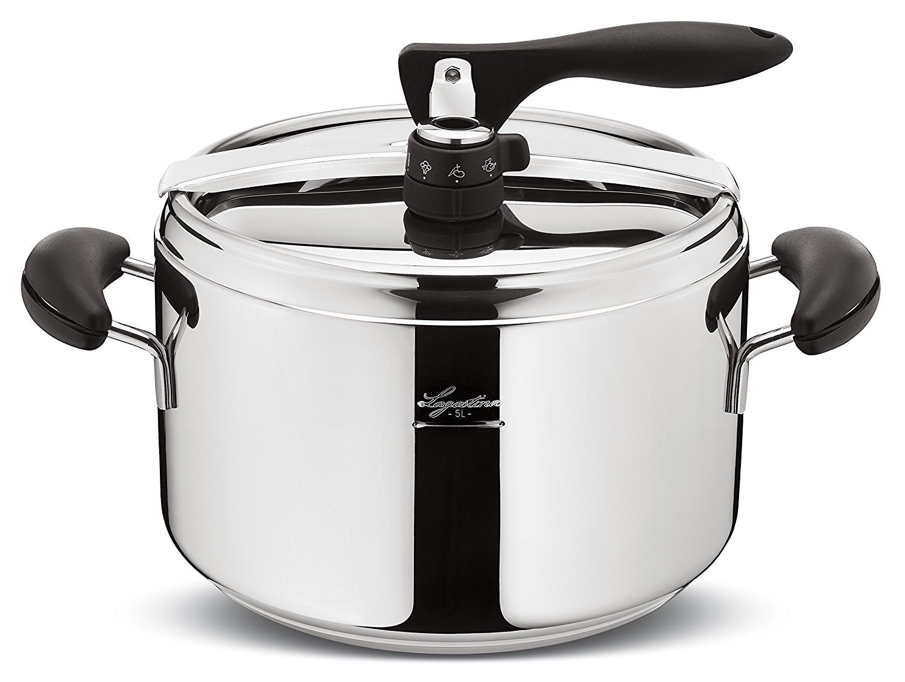
Lagostina – Test et avis
Tarte Express – Test et avis
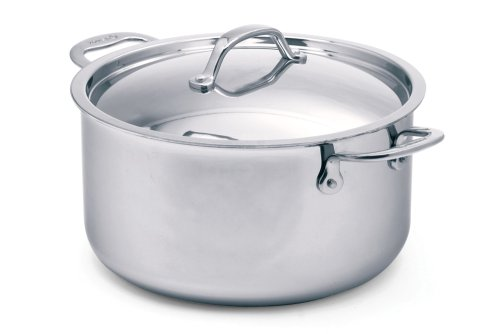
Cuisinox – Test et avis
Nicer Dicer Fusion – Test et avis
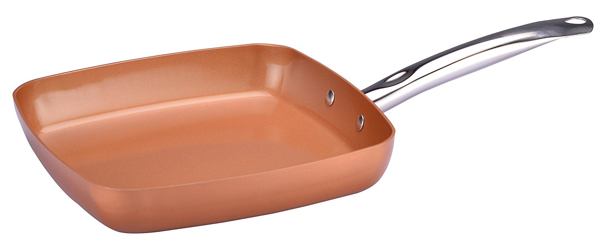
Copper Chef – Test et avis
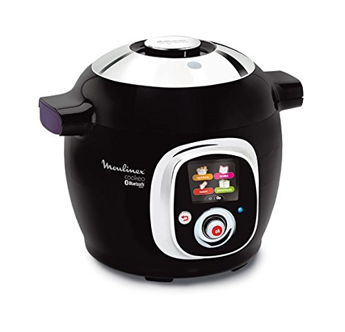
Cookeo Connect – Test et avis
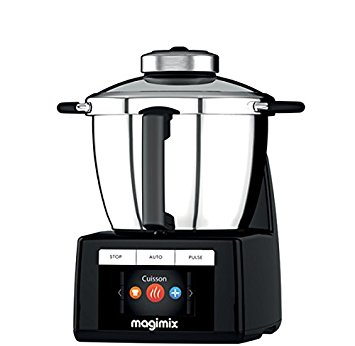
Magimix Cook Expert – Test et avis
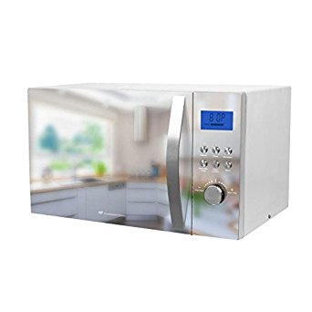
Continental Edison – Test et avis
Companion Moulinex – Test et avis
Klarstein – Test et avis
Comparatif des 10 meilleurs Extracteur de Jus Manuel
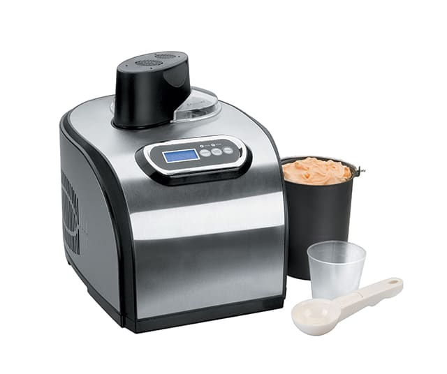
Comparatif des 10 meilleures Turbines a Glace
Comparatif des 10 meilleurs micro ondes
Comparatif des 10 meilleurs Blenders Chauffant
Comparatif des 10 meilleures Machines à Café
Comparatif des 10 meilleures Machines a Pain de 2023
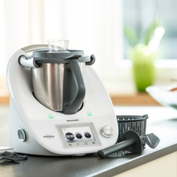
Comparatif des meilleurs robots cuisine de 2023
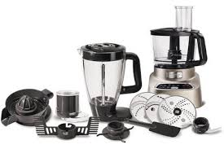
Comparatif des 10 meilleurs Robots Multifonction de 2023
Grill Viande Tefal – Test et avis
Sorbetiere Magimix – Test et avis
Theiere Bodum Test et avis
Tajine Electrique Tefal Test et avis
Comparatif des 10 meilleures Etagere a Epice
Comparatif des 10 meilleures Lave Vaisselle Professionnel de 2023
Comparatif des 10 meilleures Plaques Vitroceramiques 2 Feux
Comparatif des 10 meilleures Poeles a Crepe Induction
Comparatif des 10 meilleurs groupes filtrants silencieux de 2023
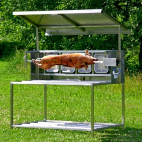
Comparatif des 10 meilleurs Tourne Broche Mechoui
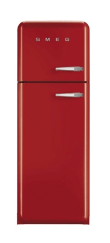
Comparatif des 10 meilleurs frigos silencieux de 2023
Cocotte Minute Seb 6 Litres – Test et avis
Comparatif des 10 meilleures cuisinières à bois Rosières de 2023
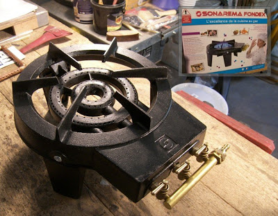
Comparatif des 10 meilleurs réchauds à gaz tripatte
Tefal Ingenio Ceramique – Test et avis
Comparatif des 10 meilleures théières égoïstes de 2023
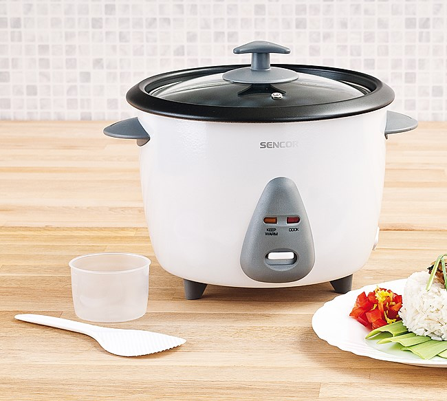
Comparatif des 10 meilleures rizeuses de 2023
Hotpoint-Ariston LFF8M116XEU – Test et Avis
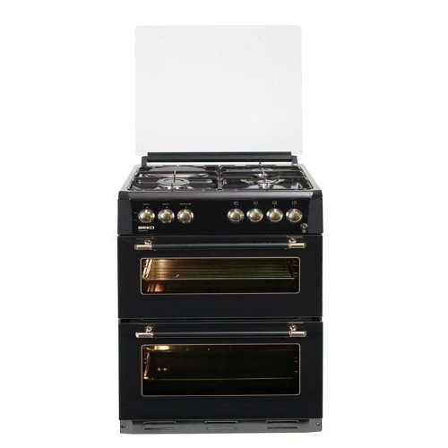
Beko CDF63111B – Test et Avis
Tarte révolution 3d deluxe rubis – Test et avis
BiFi XXL Salami Saucisse – Test et Avis
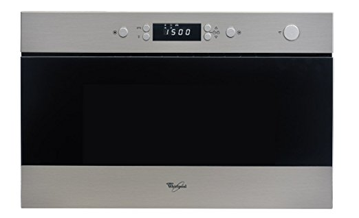
Whirlpool AMW433IX – Test et avis
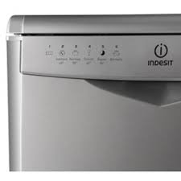
Indesit DGF 26B1 NX EU – Test et avis
Four halogène cyclonique – Test et Avis
SEB Clipso Vitaly P4261416 – Test et Avis
Robot Bomann 603790 – Test et Avis
Royalty Line, Set de 5 couteaux – Test et Avis
Multicuiseur Moulinex 12 En 1 test et avis
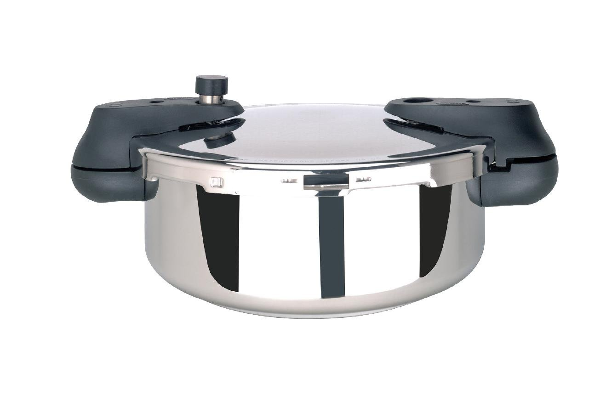
Sitram PSIFOAU04 Sitraforza – Test et Avis
Nutribullet – Test et avis
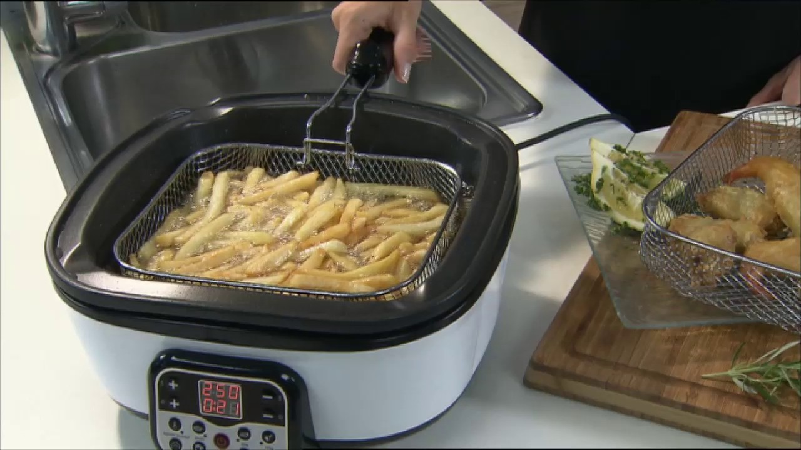
Multicuiseur Virtuocook test et avis
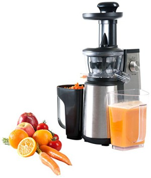
Domoclip Premium 102DOP Extracteur à Jus Vertical test et avis
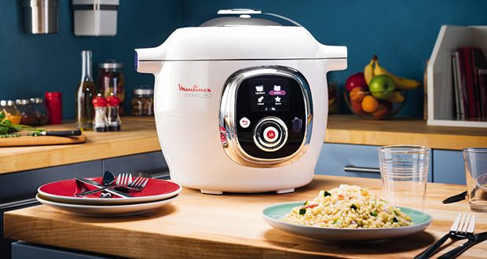
Moulinex CE7041 Cookeo test et avis
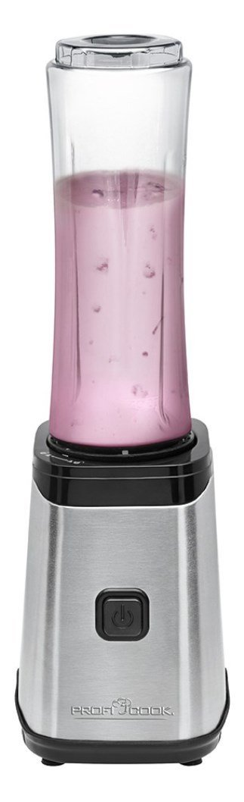
Proficook – Test et avis